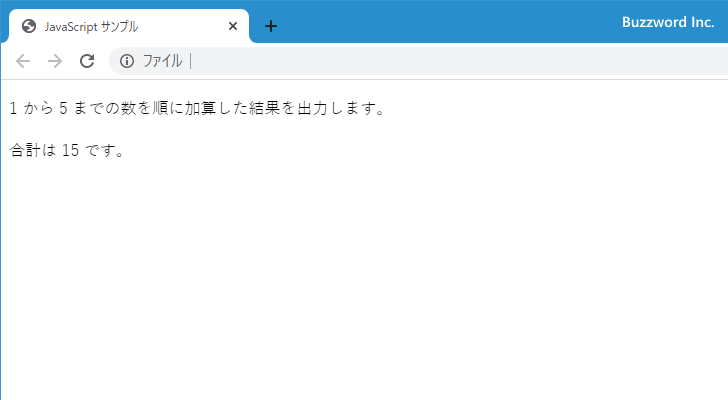
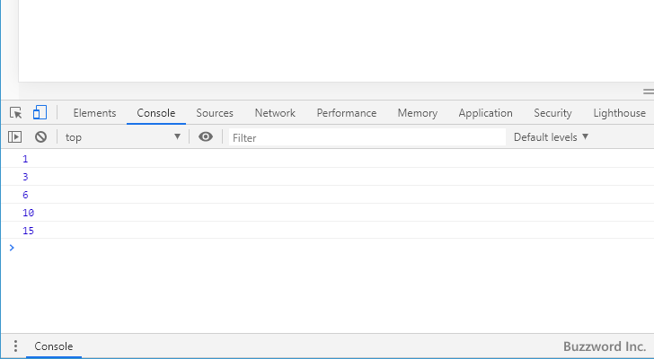

HTMLファイルに記述されたJavaScriptのコードからログをコンソールへ出力する
Console オブジェクトで用意されている console.log メソッドを使用することで、 HTML ページの中に記述された JavaScript のコードからコンソールに対して変数の値や任意の文字列などのログを出力することができます。ここでは HTML ファイルに記述された JavaScript のコードからログをコンソールへ出力する方法について解説します。
コンソールへログを出力する
JavaScript のプログラムの中からコンソールに対してログを出力するには、 Cosole オブジェクトで用意されている console.log メソッドを使用します。
console.log(obj [, obj, ...])
引数には JavaScript のオブジェクトを指定します。複数指定する場合はカンマ(,)で区切って記述してください。
どのような結果が出力されるのかはブラウザによって異なる場合もあるようですが、使い方としては基本同じです。
・Console API Reference | Chrome DevTools | Google Developers
・console.log() - Web API | MDN
実際に試してみます。次のように HTML ページを作成しました。 JavaScript のコードが記述されており 1 から 5 まで数値を加算した結果を画面に対して出力します。
<!DOCTYPE html>
<html lang="ja">
<head>
<meta charset="UTF-8">
<title>JavaScript サンプル</title>
</head>
<body>
<p>
1 から 5 までの数を順に加算した結果を出力します。
</p>
<script>
let sum = 0;
for (let i = 1 ; i <= 5 ; i++){
sum += i;
}
document.write("<p>合計は " + sum + " です。</p>");
</script>
</body>
</html>
ブラウザからこの HTML ページを表示すると、次のように画面に対して加算した結果が表示されます。
ここで for 文の中で加算が想定通りに行われているのか確認を行うため、加算が行われるたびにコンソールに対して変数 sum の値を出力してみます。先ほどの HTML ページにコードを 1 行加えました。
<!DOCTYPE html>
<html lang="ja">
<head>
<meta charset="UTF-8">
<title>JavaScript サンプル</title>
</head>
<body>
<p>
1 から 5 までの数を順に加算した結果を出力します。
</p>
<script>
let sum = 0;
for (let i = 1 ; i <= 5 ; i++){
sum += i;
console.log(sum);
}
document.write("<p>合計は " + sum + " です。</p>");
</script>
</body>
</html>
ブラウザからこの HTML ページを表示すると、画面上では先ほどと同じように加算した結果だけが表示されます。

では現在利用しているブラウザのコンソールを表示してください。(各ブラウザのコンソールの表示の仕方は「ブラウザのコンソールからJavaScriptを利用する」を参照されてください)。

変数 sum に値が加算されるたびに変数の値が コンソールにログとして出力されているのが確認できます。
このように console.log メソッドを使うことで、ブラウザの画面ではなくコンソールに対して指定したオブジェクトの内容をログとして出力し確認することができます。
※ console.log メソッドのより詳しい解説については「コンソールにログを出力する(console.log、console.info、console.warn、console.error)」をご参照ください。
※ 簡潔に記述できるので document.write をここでは使用していますが、現在は document.write の利用は非推奨となっています。 document.write の代わりとして「現在処理を実行しているscript要素を取得(currentScript)」などを使用されてください。
-- --
HTML ファイルに記述された JavaScript のコードからログをコンソールへ出力する方法について解説しました。
( Written by Tatsuo Ikura )

著者 / TATSUO IKURA
初心者～中級者の方を対象としたプログラミング方法や開発環境の構築の解説を行うサイトの運営を行っています。